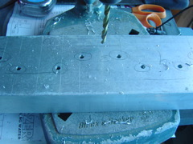

|  |
|
|
Nb.The top pictures are from a single sided version, which is mounted top and bottom.
The bottom two are the double sided one. It is mounted on the bottom only, having two brackets for stability.
For the Double sided version, the Top Reflector was held in place with small panel pins. I drilled 1mm holes through the front and back of the waveguide and into the edge of the top plate and hammered in the panel pins.
I siliconed the edges to ensure the antenna didn't fill up with water.
 |
 |
Cut the red area from the copper and roll into a cone. Solder along the joint and solder onto an N-Connector so that the cones base will be exactly half way across the cavity. In my case, this was 22mm (including the bit of the Nconnector it was soldered to). I had to cut down the center of the Nconnector slightly.
Nb.The 10mm hole in the waveguide for the Nconnector will be too small for a cone probe. You will need to drill it out to 16mm. Do this in small increments, widening the hole one or two drill bit sizes at a time. It will make a much neater hole.
{kind=link}